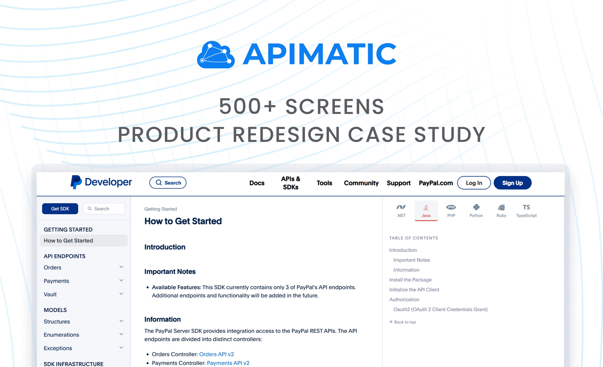
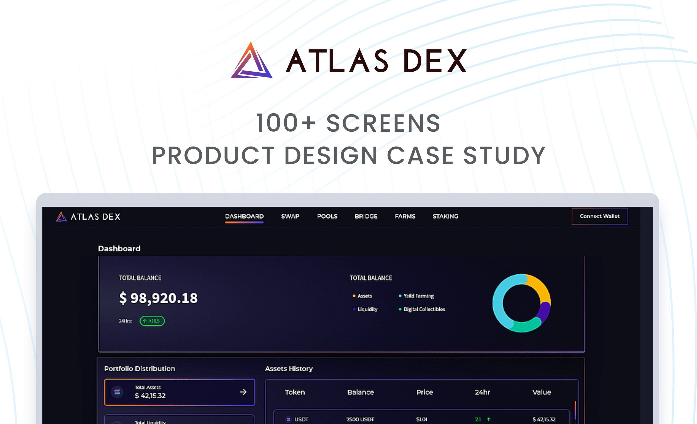
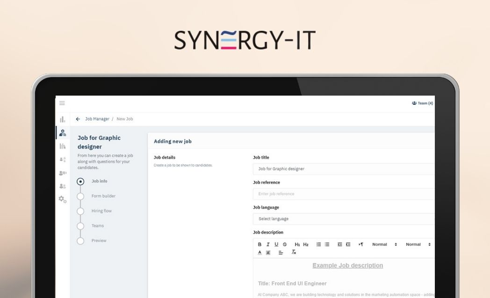

Featured Projects

APIMatic: Redefining the Developer Journey
Redesigning the end-to-end API lifecycle management experience for 500+ screens. I focused on simplifying complex technical documentation and automated workflows to reduce integration friction for global developers.
View Case Study
Atlas DEX: Cross-Chain Router Integration
Led the product design for a $6M Web3 venture, engineering a seamless cross-chain router interface. I focused on simplifying the complexity of multi-blockchain transactions, ensuring high-speed execution and intuitive asset management for professional traders.
View Case Study
Smart Talent Acquisition
Optimizing the enterprise hiring funnel by designing intelligent dashboards. I focused on automating candidate sourcing and distilling massive applicant data into actionable insights for high-speed HR decision-making.
View Case StudyFrom intelligence systems and mission-critical dashboards to enterprise SaaS and mobile experiences.
Explore More Case StudiesStrategic Design for Defense & Intelligence Systems (NDA Protected)
I am currently at Rapidev (OwlSense), leading the experience design of mission-critical tactical interfaces and OSINT platforms. While strict NDAs prevent me from displaying the UI publicly, I specialize in building robust design systems for high-stakes, 24/7 operational environments.
Tactical Situational Awareness
C4ISR Dashboards
OSINT Investigation Suites
Geospatial Intelligence
Signal Intelligence Visualization
Mission Planning Tools
Real-time Asset Tracking
Expertise
Technical Product Ecosystems
Translating high-level technical requirements into seamless user experiences. Whether it is API management or complex cloud infrastructure, I specialize in reducing the "barrier to entry" for technical users while maintaining robust functionality for power users.
High-Stakes & Tactical Design
Expert in designing for environments where speed and accuracy are non-negotiable. I apply human-factors engineering to high-density data systems—from intelligence platforms to fintech—ensuring users can make critical, data-driven decisions under pressure without cognitive overload.
Product Strategy & Growth
Design is a business tool. I leverage user research and data analytics to identify conversion leaks, optimize user funnels, and align product roadmaps with business goals. My focus is on creating scalable design systems that drive long-term adoption and measurable ROI.
Looking for a Senior Designer who solves complex product challenges?
Open to new projects or leadership roles in Product Design, DX, and Tactical Intelligence.
Let's Talk